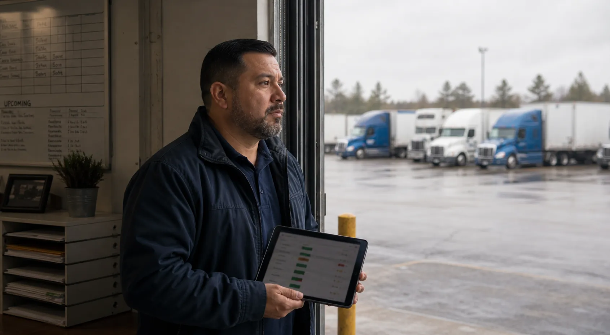

owned or controlled fleet work across yards, branches, routes, and departments
Private fleet readiness
Protect the freight your business depends on.
Coordinate internal drivers, equipment, locations, and proof so service risk is visible before it reaches the customer.
Named readiness stateEvidence tied to the recordClear owner and next action
readiness record for driver, documents, exception owner, audit note, and next action
routine packet triage and exception surfacing before managers spend time chasing basics
Private fleet control board
Readiness, proof, and internal controls stay in one operating rhythm.
Branch route proofPOD, dock photo, receiver noteReady
Driver governancelicense, medical, training, policy acknowledgementReview
Internal controlsowner, branch handoff, exception noteVisible
Document governanceproof packet and audit trail attachedFiled
Assessment fit
Take the BOF Fleet Assessment
Private, government, and internal fleet teams can start with one proof problem.
The page stays careful about regulatory claims: BOF supports visibility, governance, and reviewable records without promising automatic compliance outcomes.
Where private fleets feel pressure
Internal fleet work can look simple until proof, policy, and ownership split across locations.
The old operating pattern is familiar: each branch has its own board, driver files live in several places, and proof gets reconstructed after someone asks for it. BOF turns those daily gaps into a visible readiness record.
Branch variance
Different yards clear drivers, documents, and handoffs differently. BOF gives the team a standard readiness language before a move is trusted.
Policy without proof
Private fleets often have policies, but dispatch still needs a clear record showing the driver, asset, packet, and decision were actually reviewed.
Finance ambiguity
Internal chargebacks, customer disputes, and settlement questions get harder when POD, BOL, seal, and dock evidence are not tied to the move.
Owner visibility
Leadership needs the daily operating truth without waiting for a manager to rebuild the story from emails, spreadsheets, and folders.
AI-assisted BOF service
BOF uses AI assistance to reduce the routine review burden, not to remove judgment.
AI-assisted review helps BOF sort document packets, flag missing fields, compare readiness signals, and surface exceptions faster. BOF still keeps people in the loop: managers see the release answer, the owner, the blocker, the supporting record, and the next action.
Faster first pass
Routine checks such as missing proof, expired dates, incomplete packets, and unusual hold reasons can be surfaced before the manager starts digging.
Less mundane chasing
BOF organizes the basic follow-up work so managers spend less time hunting paperwork and more time resolving the real operating decision.
Human-reviewed outcome
The final readiness decision remains tied to BOF review, fleet policy, and the manager-facing record, not an unchecked automated answer.
Service delivery fit
AI assistance supports BOF's managed service: triage faster, assign owners earlier, and keep the evidence visible for the team.
Private fleet imagery
The page should look like private fleet work: warehouse proof, route boards, branch reviews, and owner decisions.
These scenes keep the story grounded in realistic operating environments instead of generic software screenshots.
Warehouse proof review
POD, dock photo, and delivery notes stay attached to the move.

Route board review
Branch routes still need driver, document, and exception clarity.

Owner operating view
The owner sees what can move and what still needs follow-up.
How BOF engages
Start with one operating pressure, then standardize the record around it.
Private fleets do not need a large integration project to prove value. BOF can begin with one lane, yard, driver file, delivery packet, or release issue and show the repeatable readiness model.
01
Discover
Map how each branch clears drivers, captures proof, and closes internal handoffs today.
02
Design
Set the BOF readiness record: driver, documents, owner, blocker, consequence, and next action.
03
Deploy
Start with high-friction lanes, regulated cargo, recurring proof gaps, or management visibility issues.
04
Operate
Use BOF to keep branch work, document proof, and follow-up ownership visible day to day.